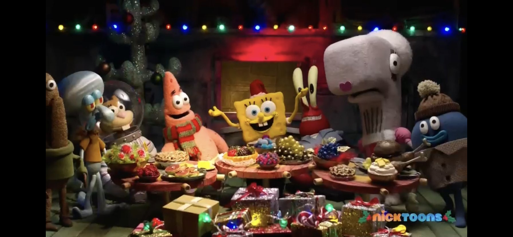

Personal Life
SpongeBob SquarePants leads a rich and fulfilling personal life surrounded by close friends and a supportive community. His best friend Patrick Star is a constant companion, and the two share many adventures in Bikini Bottom. SpongeBob values friendship above all else, often helping his friends in times of need. In addition to his relationships with friends, he is a strong believer in the importance of hard work, kindness, and perseverance. SpongeBob's personal life is filled with joy, laughter, and the simple pleasures of life, reflecting his belief in the goodness of the world around him.
SpongeBob enjoying time with his best friends in Bikini Bottom.
- Has close friendships with Patrick Star and Sandy Cheeks.
- Values hard work, kindness, and perseverance.
- Loves spending time in Bikini Bottom with friends.
- Known for his loyalty and helpful nature.
- Believes in the goodness of the world around him.